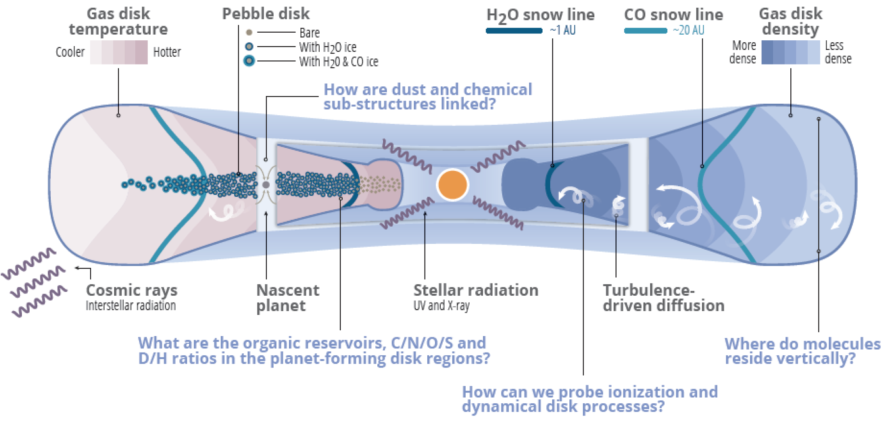

Disk Chemistry
The chemical evolution of disks can have profound implications on the composition and potential habitability of planets formed within. I am a member of the 'Molecules with ALMA at Planet-forming Scales' (MAPS) ALMA Large Program, designed to expand our understanding of the chemistry of planet formation by exploring protoplanetary disk chemical structures down to 10 au scales in five disks. Check the publications on MAPS.

Exploring the Origin of Disk Chemical Diversity
To assees what role, if any, initial chemical conditions play in setting the disk chemical trajectories, we proposed with ALMA to map out the chemical in five pairs of binary T Tauri disks, probing the disks with common tracers of disk CO masses, probes of C/N/O gas-phase ratios, deuterium fractionation process, and in a number of organic molecules with different complexity.
Data from ALMA-2021.1.00473.S (PI. Feng Long) have been fully delivered. Stay tuned for our results.
Nitrogen Chemistry - HNC
This is my first disk chemistry project, which turned out to be using chemical probes to trace disk structure. In Long, F. et al. A&A 2021, we used the 2D thermochemical code DALI to investigate the HNC and HCN line emission in disks at (sub-)millimeter wavelengths and explored their potential utility for probing disk temperature and other disk properties. We found that high-spatial resolution ALMA disk observations of HNC and HCN that can locate the emitting layers would have the great potential to constrain both the disk thermal and UV radiation structures, and also to verify our understanding of the nitrogen chemistry.